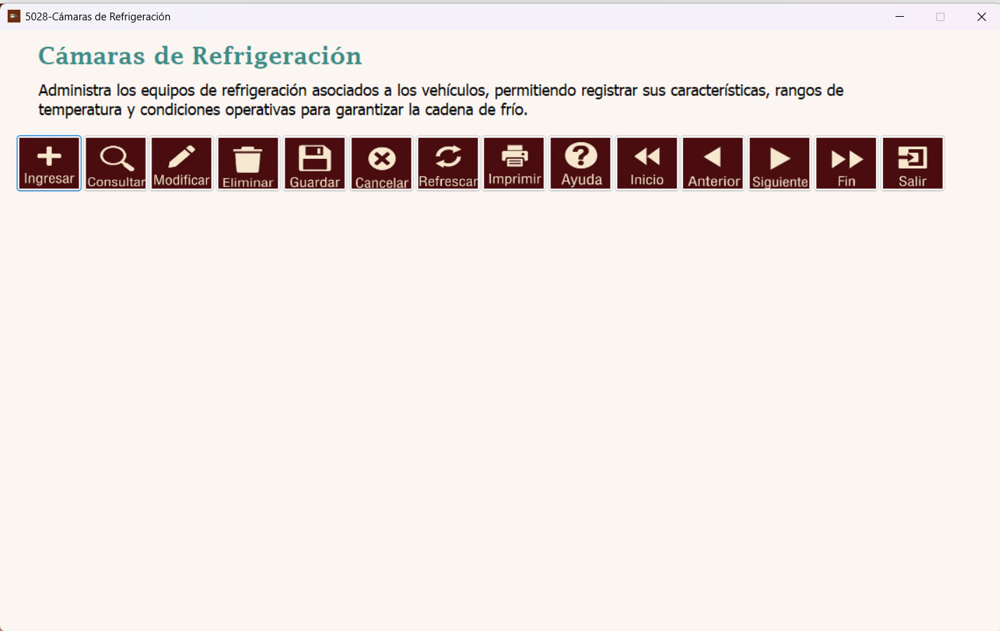
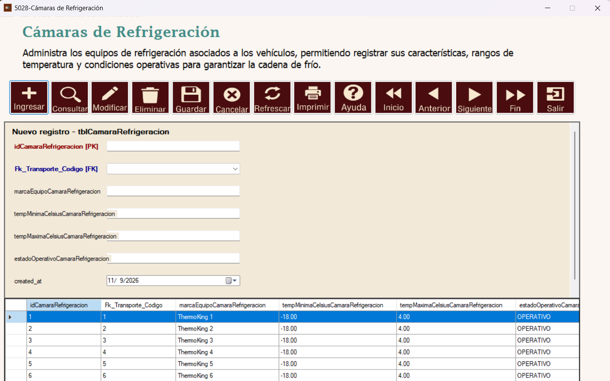
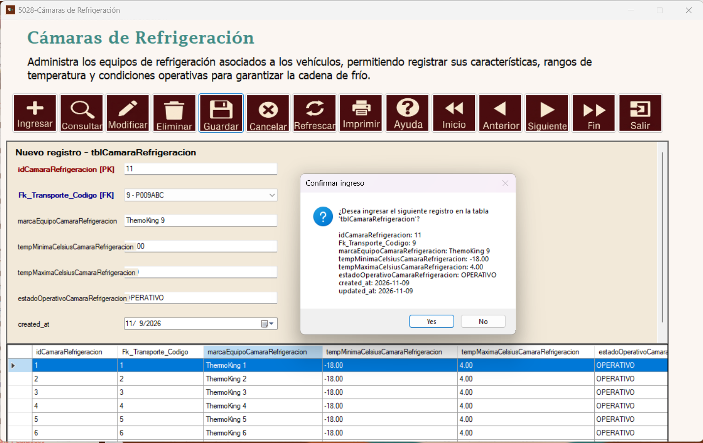
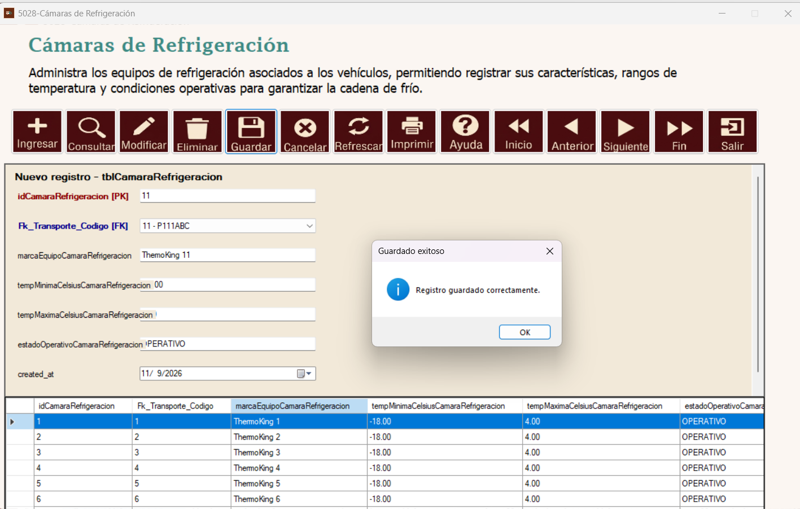
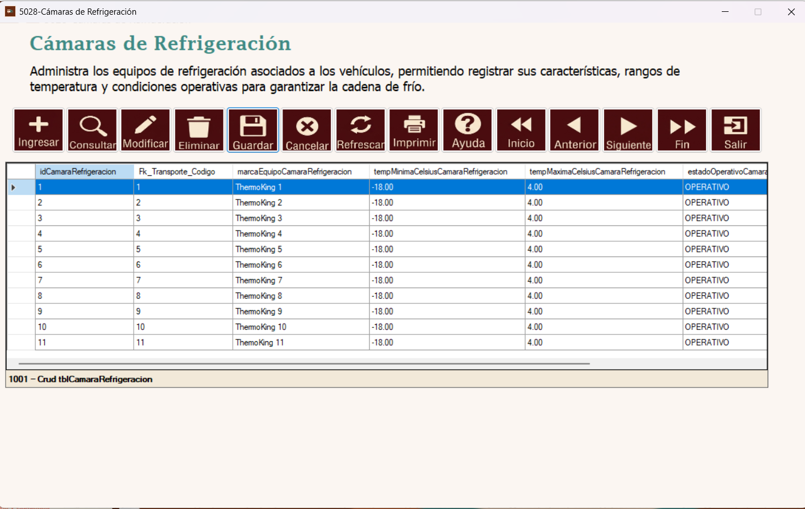
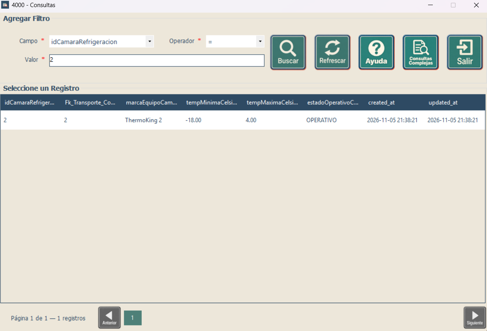
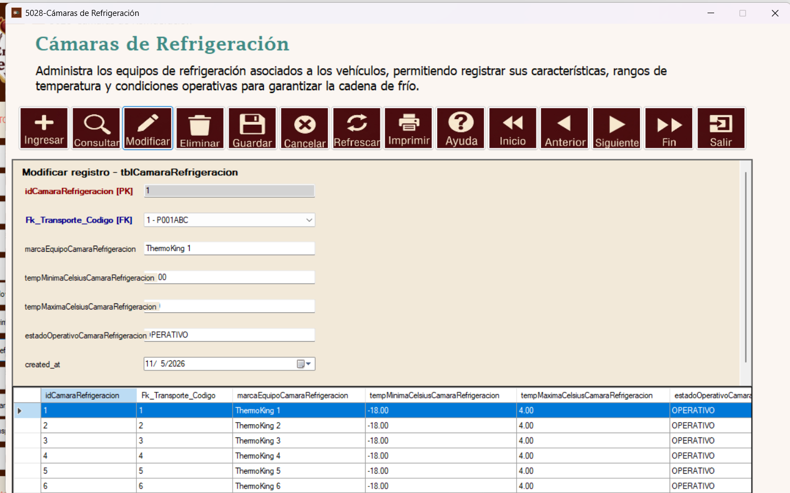
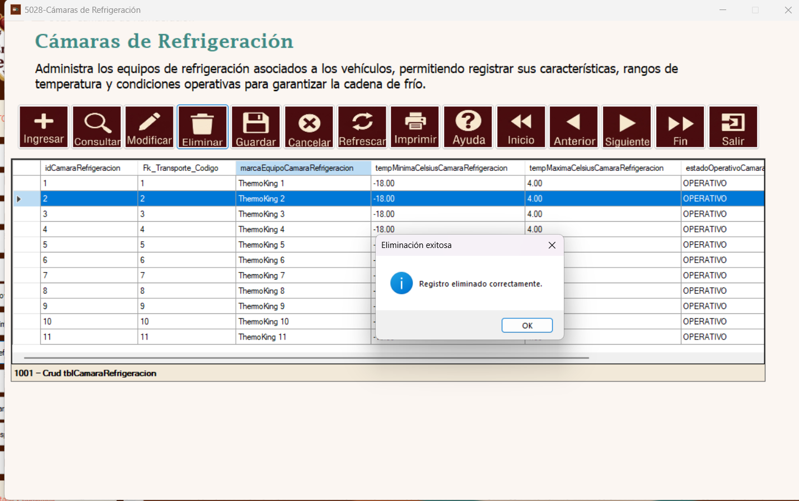

Ayuda: Cámaras de Refrigeración
Módulo Logística | Formulario 5028 – Cámaras de Refrigeración | tblCamaraRefrigeracion
Esta ayuda explica paso a paso el uso del mantenimiento de equipos de refrigeración, mediante capturas reales del sistema.
- 1. Introducción
- 2. Ingresar una cámara de refrigeración
- 3. Completar los campos
- 4. Confirmar el ingreso
- 5. Mensaje de guardado exitoso
- 6. Verificar la cámara en el listado
- 7. Consultar cámaras con filtros
- 8. Modificar una cámara de refrigeración
- 9. Eliminar una cámara
- 10. Referencia de campos
- 11. Otros botones y recomendaciones
1. Introducción
El mantenimiento de Cámaras de Refrigeración permite administrar equipos de refrigeración asociados a vehículos de transporte interno, sus rangos de temperatura y su estado operativo. En la barra superior están las funciones del Navegador y el listado aparece en la parte inferior.

Pantalla principal del mantenimiento 5028 – Cámaras de Refrigeración.
2. Ingresar una cámara de refrigeración
Presione Ingresar para abrir el formulario Nuevo registro – tblCamaraRefrigeracion. En el área de captura se muestran los campos disponibles; debajo puede consultar los registros existentes.

Formulario vacío para registrar una cámara de refrigeración.
3. Completar los campos
Seleccione el transporte en Fk_Transporte_Codigo. Ingrese la marca del equipo, la temperatura mínima y máxima en grados Celsius y el estado operativo. Compruebe que la temperatura mínima sea coherente con la máxima. El campo idCamaraRefrigeracion identifica el registro; revise el valor que presenta el sistema.
Campos del mantenimiento de cámaras de refrigeración.
4. Confirmar el ingreso
Después de verificar la información, pulse Guardar. Aparecerá un mensaje de confirmación que resume los datos a ingresar en tblCamaraRefrigeracion. Seleccione Sí para confirmar o No para cancelar.

Cuadro de confirmación antes de guardar la cámara.
5. Mensaje de guardado exitoso
Si el registro se guarda correctamente, el sistema muestra Registro guardado correctamente. Pulse OK para continuar.

Mensaje de guardado exitoso del equipo.
6. Verificar la cámara en el listado
Después de guardar, compruebe que la cámara aparezca en la tabla inferior con el transporte asociado, la marca del equipo, su temperatura mínima, máxima y estado operativo. En la captura aparece el registro de ejemplo ThermoKing 11.

Listado de cámaras tras el registro.
7. Consultar cámaras con filtros
Presione Consultar para abrir la ventana 4000 – Consultas. Elija el Campo, Operador y Valor; luego presione Buscar. En el ejemplo se busca el identificador idCamaraRefrigeracion = 2 y se muestra un resultado.

Consulta filtrada por identificador de cámara.
8. Modificar una cámara de refrigeración
Seleccione el registro de la tabla y presione Modificar. El formulario mostrará los datos del registro seleccionado. Actualice los campos permitidos y pulse Guardar para aplicar los cambios. El identificador principal permanece como referencia del registro.

Formulario para modificar una cámara existente.
9. Eliminar una cámara
Seleccione la cámara correspondiente y presione Eliminar. Confirme la operación solo si el registro seleccionado es el correcto. La imagen muestra el mensaje Registro eliminado correctamente después de la eliminación. Tenga presente que las relaciones con otros registros pueden impedir eliminar una cámara en algunos casos.

Mensaje de eliminación exitosa.
10. Referencia de campos
| Campo | Función |
|---|---|
idCamaraRefrigeracion | Identificador principal de la cámara. |
Fk_Transporte_Codigo | Vehículo al que se encuentra asociado el equipo de refrigeración. |
marcaEquipoCamaraRefrigeracion | Marca o nombre comercial del equipo. |
tempMinimaCelsiusCamaraRefrigeracion | Límite inferior de temperatura indicado en grados Celsius. |
tempMaximaCelsiusCamaraRefrigeracion | Límite superior de temperatura indicado en grados Celsius. |
estadoOperativoCamaraRefrigeracion | Condición operativa registrada para el equipo. |
created_at / updated_at | Fechas de creación y actualización del registro, según la tabla y el sistema. |
11. Otros botones y recomendaciones
Cancelar: interrumpe una captura o edición. Refrescar: actualiza el listado. Inicio, Anterior, Siguiente y Fin: permiten recorrer registros. Imprimir: accede a la impresión disponible en el Navegador. Ayuda: abre la documentación del formulario. Salir: cierra el mantenimiento.